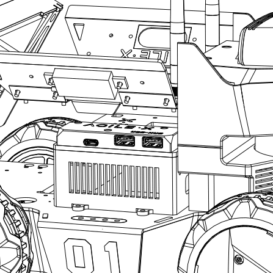
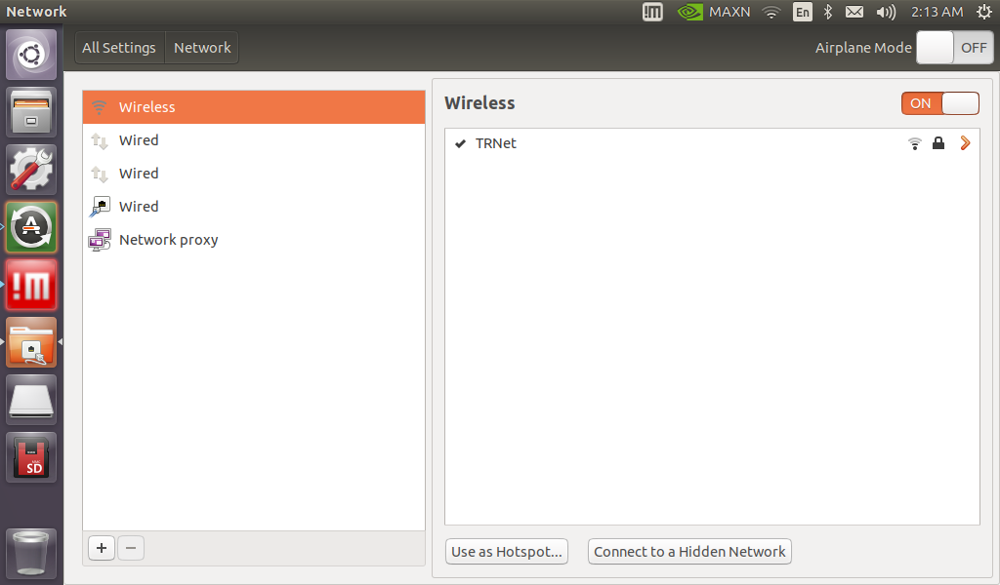
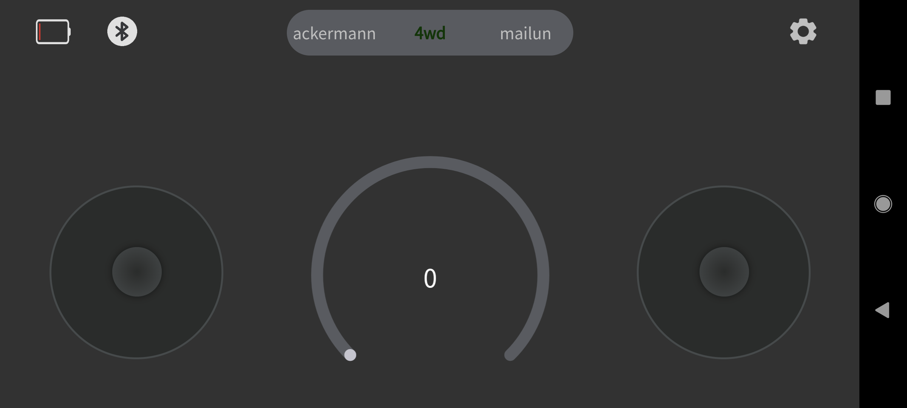
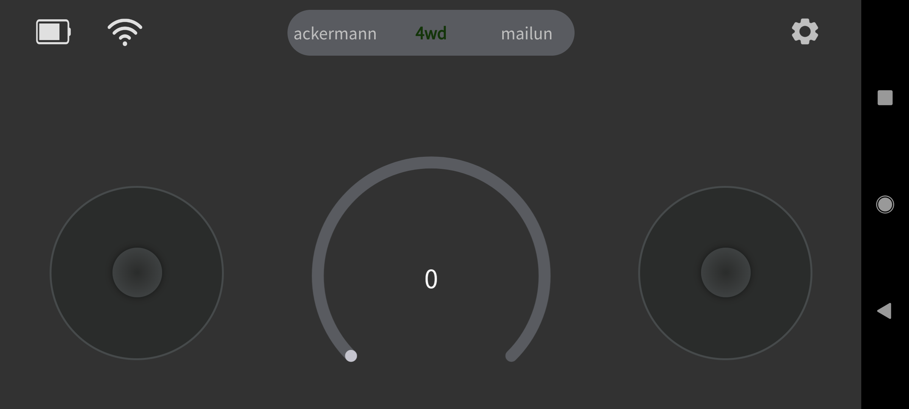
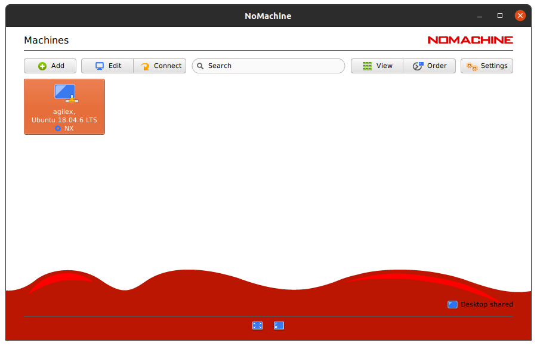
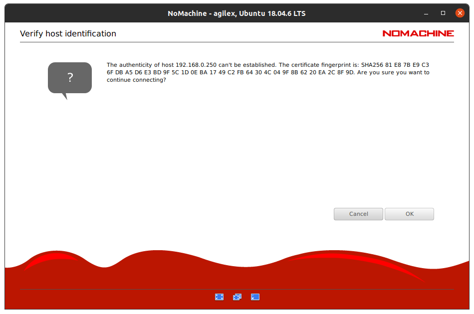
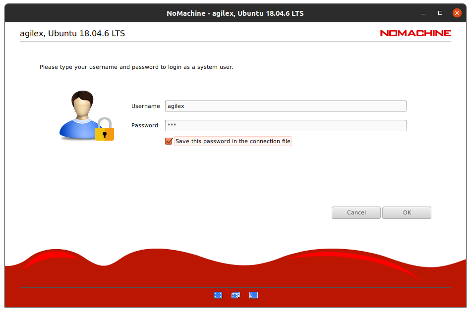
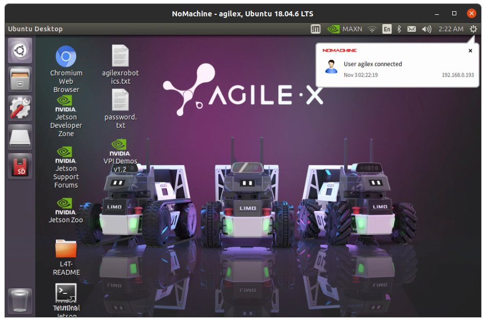
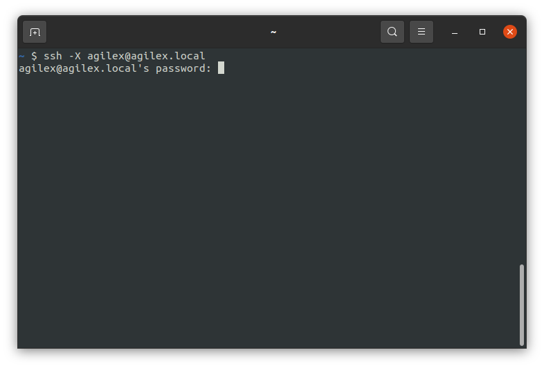

Getting Started
LIMO Contents
Your LIMO should come with the following:
- 1x LIMO Robot
- 1x Battery
- 1x Charger
- 4x Mecanum Wheels
- 2x Tracks
- 2x Wi-Fi/Bluetooth Antennas
- 1x Allen Wrench
- 3x M3x12mm Screws
- 20x M3x5mm Screws
First Time Use
- Install the two antennas to the connectors on top of the LIMO.
- Charge the battery until the LED indicator on the charging blocks is a solid green.
- Open the rear door on the LIMO and connect the battery to its connector.
- Long press the power button on the left side of the robot to turn it on.
- Check the battery charge level by observing the indicator on the right side of the robot.
| Light Status | Meaning |
|---|---|
| Solid Green | Sufficient Battery Charge |
| Flashing Red | Low Battery Charge |
- Check the current steering mode of the robot by observing the color of the lights at the front by the latches.
| Latch Status | Indicator Color | Current Steering Mode or Status |
|---|---|---|
| Any | Blinking Red | Low Battery or Main Controller Alarm |
| Solid Red | LIMO Stopped Due to Error | |
| Inserted | Yellow | Four-wheel Differential Drive or Tracked |
| Blue | Mecanum | |
| Released | Green | Ackermann |
Open the door on the right side of the robot. You will see two USB ports on the USB hub. Plug in a mouse and keyboard.
Connect your robot to your Wi-Fi using the LIMO computer’s settings menu under All Settings > Network.

Mobile App Setup
Download and install the controller application.
iOS: Search for “Nexus” in the AppStore
Android: The QR code below takes you to the download link:

Tap on the Bluetooth icon in the upper left to open the connection menu.
Select the connection with the same name as the one on the front of your robot.

Once connected, you will see the battery level of your robot as well as the connection symbol. You should also be able to control your robot. Find information on controlling your robot using the mobile app in the App Operation Guide.

Setting Up Remote Development
Instead of having to hook up a mouse and keyboard to your LIMO every single time you want to use it, you have the option of doing remote development. There are many ways to accomplish this, but we will present a few options here.
Remote Desktop (NoMachine) Setup
NoMachine is a remote desktop software developed by the Luxembourg-based company of the same name. It comes pre-installed on the LIMO for your convenience. The directions for setting up a connection between your remote computer and the LIMO are below:
- Download and install the version of NoMachine matching your remote computer’s OS from the NoMachine download page. Follow the instructions for installation.
Make sure that your remote computer and your LIMO are on the same Wi-Fi network.
Open NoMachine on your remote computer.
Choose the LIMO’s Jetson Nano from the list of connection options.
Click “Yes” to verify the host authenticity.
Enter the username
agilexand the passwordagx. You can choose the save the password to the connection file if you’d like.Click “OK” to proceed through the tips.
You are now able to remote into your LIMO through NoMachine.

Linux Secure Shell Protocol (SSH) Setup
Basic secure shell protocol (SSH) allows a user to access command-line interface on a device from a remote computer.
Install the openssh-client package on your remote linux computer.
$ sudo apt install openssh-clientInstall the openssh-server package on your LIMO.
$ sudo apt install openssh-serverMake sure that your remote computer and your LIMO are on the same Wi-Fi network.
SSH into the LIMO from your remote computer with the display forwarding flag
-X.# ssh -X username@hostname.local $ ssh -X agilex@agilex.local
Note
If prompted, continue to connect despite not being able to verify the authenticity of the host.
Note
If prompted, enter the password
agxand accept the SSH key.Note
The
-Xflag indicates to OpenSSH that we want to do display forwarding, meaning that OpenSSH will forward graphical application to the client from the server. On the server side, X11Forwarding yes must be specified in /etc/ssh/sshd_config. Note that the default is no forwarding (some distributions turn it on in their default /etc/ssh/sshd_config), and that the user cannot override this setting.Once logged in to the LIMO, you can open multiple SSH’ed terminals using the command below.
$ gnome-terminal &
Sometimes, this doesn’t work. In that case, use the command from this Ask Ubuntu answer.
$ /usr/bin/dbus-launch /usr/bin/gnome-terminal &
Turning Off Your LIMO
- It is a good idea to cleanly turn off the LIMO’s onboard computer when you are finished using it.
To do this, type
sudo poweroffin its terminal and enter the passwordagx. - Press and hold the LIMO battery’s power button until the robot powers off.